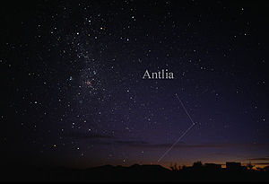
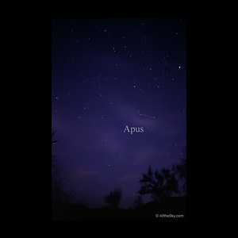
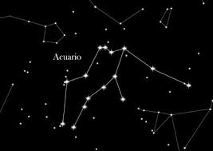
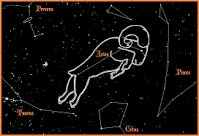
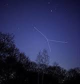

Constelaciones.

Andrómeda es una constelación boreal situada al sur de Casiopea y cerca de Pegaso. Toma su nombre de la doncella Andrómeda de la mitología griega. Comparte una estrella con Pegaso, la estrella blanco-azulada de la esquina noroeste del Cuadrante de Pegaso, denominada Alpheratz o Sirrah (α Andromedae). |
|

Denominada Antlia Pneumática (máquina neumática) como el invento del físico inglés Robert Boyle del siglo XVII. Su nombre fue reducido en la protocolización de las 88 constelaciones por parte de la Unión Astronómica Internacional. |
|

Apus (el ave del paraíso) es una constelación del sur. Aparece por primera vez en Uranometría de Johann Bayer (año 1603), pero pudo haber sido usada por navegantes con anterioridad. |
|

Acuario (el portador del Agua o ánfora, símbolo Aquarius.svg, Unicode ♒), es una de las 88 constelaciones reconocidas por la astronomía moderna, descrita por Claudio Ptolomeo. Su símbolo representa el flujo del agua. |
|

Aries (el carnero, símbolo Aries.svg, Unicode ♈) es una de las constelaciones del zodíaco; se encuentra entre las constelaciones de Piscis, al oeste, y Tauro al este. |
|

Cáncer (el cangrejo, símbolo Cancer.svg, Unicode ♋), en astronomía, es una de las doce constelaciones del zodíaco. En astrología, Cáncer constituye uno de los doce signos zodiacales. La constelación de Cáncer es pequeña y débil . Se encuentra entre las constelaciones de Géminis al Este, Lince al Norte y las constelaciones de Canis Minor e Hidra al Sur. |